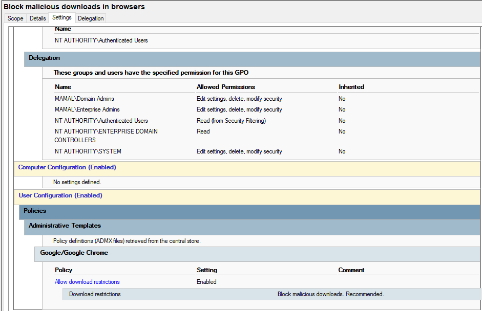

Block Downloads Policy (Chrome Security Control)
Purpose
This policy prevents users from downloading potentially malicious files through web browsers such as Google Chrome. It is used to enforce security in the computer lab environment and reduce the risk of malware infection.
How it works
The policy is applied at the User Configuration level using Group Policy. It restricts download behavior in Chrome by enforcing security rules that block or warn on unsafe file downloads.
How it is applied
- Open Group Policy Management Console (GPMC)
- Edit the target User Configuration policy
- Navigate to: User Configuration → Policies → Administrative Templates → Google Chrome → Downloads
- Enable restrictions for file downloads
- Apply and update policy using
gpupdate /force
Screenshot
Configuration applied in Active Directory:
